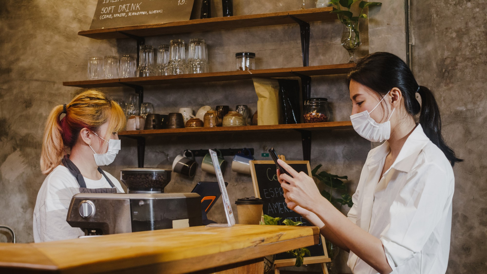

Are contactless menus the future?
COVID-19 has definitely made things interesting, especially when it comes to how we do business. Suddenly, we're all paranoid about touching things that other people have touched. It's like we're all in some kind of weird horror movie where the killer is invisible and lives on doorknobs and menus. That's why I'm convinced that contactless menus are the way to go. No more awkward menu exchanges or accidental germ sharing at restaurants. It's like the future has finally arrived, and it's touchless!
How contactless menus work?
1. Upon entering the restaurant, the customer is greeted by the host.
2. The host points to the QR code on the table and gives a brief explanation.
3. Customers scan the QR code to access the menu.
4. The customer places their order through the QR Zebra Pro menu application.
5. Payment is also made through the menu app.
"This convenient and hygienic system allows customers to enjoy their dining experience without the need for physical menus or contact with staff members. It also helps to reduce the risk of transmission of any potential illnesses."

Contactless menus are digital versions of traditional physical menus that can be accessed through a link or QR code. These menus offer more than just a list of food and drink options - they also provide a convenient way for customers to communicate with wait staff, place orders, and pay for their meals. With the rise of the COVID-19 pandemic, the use of contactless menus has increased significantly as a way to reduce the risk of transmission and maintain social distancing.
So, what are the benefits of contactless menus? Firstly, they provide a safe and hygienic way for customers to access menus and place orders. There is no need for physical contact with menus or wait staff, which helps to reduce the risk of transmission of any potential illnesses. Additionally, contactless menus are convenient for customers, as they can easily browse the menu and place orders using their own devices. This saves time and effort for both customers and staff, and can help to streamline the ordering process. Contactless menus also offer the opportunity for restaurants to showcase their menu in a more interactive and visually appealing way, which can help to increase customer engagement and drive sales. Overall, contactless menus offer a range of benefits for both customers and restaurants, making them a valuable asset in the modern dining experience.
Implementing a contactless menu has many benefits for the catering industry:
Improved hygiene: One of the main advantages of contactless menus is that they provide a safer and more hygienic way for customers to access menus and place orders. There is no need for physical contact with menus or wait staff, which helps to reduce the risk of transmission of any potential illnesses. This is particularly important during the COVID-19 pandemic, when concerns about hygiene and social distancing are at the forefront of many people's minds.
Enhanced customer experience: Contactless menus can provide a more interactive and visually appealing way for restaurants to showcase their menu, which can help to increase customer engagement and drive sales. Customers can also use contactless menus to easily access nutritional information and special offers, which can help them to make more informed decisions about their food choices.
Increased efficiency: Contactless menus can help to streamline the ordering process, saving time and effort for both customers and staff. Customers can easily browse the menu and place orders using their own devices, which means they don't have to wait for a server to take their order. This can help to improve the overall dining experience and reduce waiting times.
Reduced costs: Contactless menus can help to reduce costs for catering businesses, as there is no need to print and distribute physical menus. This can help to save money on materials and labor costs, and it's also better for the environment.
Overall, implementing a contactless menu can bring many benefits to the catering industry, including improved hygiene, increased efficiency, enhanced customer experience, and reduced costs.

What types of businesses use contactless menus?
Contactless menus are being used by a variety of businesses in the hospitality industry, including restaurants, cafes, bars, and hotels. These digital menus and ordering tools provide a convenient and hygienic way for customers to access menus, place orders, and pay for their meals. Contactless menus are particularly popular in the food and beverage industry, but they can also be used in other areas such as spas, salons, and other service-based businesses.
Contactless menus are typically accessed through a link or QR code, which can be displayed on tables, menus, or other locations around the establishment. Customers can then use their own devices, such as smartphones or tablets, to scan the code and access the menu. This makes it easy for businesses to offer a contactless menu option without requiring any special equipment or technology.
Overall, contactless menus are a useful tool for any business in the hospitality industry looking to provide a safer, more convenient, and more efficient service to their customers.
How do contactless menus work?
Contactless menus are a simple and effective way to access menus and place orders. To use one, simply open the camera on your phone and scan the QR code provided below. This will bring up the menu on your device, allowing you to browse and select the items you wish to order. Payment can also be made through the app or with the server. This convenient system allows for a safe and efficient dining experience without the need for physical contact.
As a guest enters the restaurant, they are greeted by the host and shown to their table. The host points out the QR code on the table and explains how to use a smartphone to access the restaurant's menu. The customer scans the QR code and views the contactless menu on their phone, placing their order through the menu application or with the server.
Before or after their meal is ordered, the customer can use the menu app to pay for their order at any time. The advanced contactless menu allows for convenient payment options, including the ability to split the bill. This frees up servers to focus on other tasks and enhances the overall dining experience for the customer.
"As we look to the future of contactless menus, it's clear that developers have created a product that is small in size but big on convenience. These menus are here to stay and are only going to get better with time. In the near future, expect to see contactless menus popping up in all sorts of places, with new and improved features that cater to all your needs. So get ready to wave goodbye to those awkward menu exchanges and hello to a world of touchless convenience!"